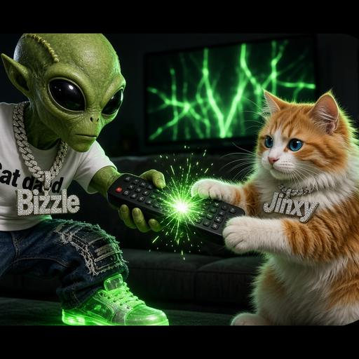

Bizzle's Ultimate Cube Remotev4.20
An Android phone remote for the Amazon Fire TV Cube. It talks to the Cube directly over your Wi-Fi.
SHA-256: 12923dd86b1f0aafdb4cf0d5330d1a7cf71f1fb421b7862898ba5c834287286a
Set it up once
- On the Cube: Settings → My Fire TV → About, then press Select on the device name 7 times to turn on Developer Options.
- My Fire TV → Developer Options → ADB Debugging: ON.
- Write down the Cube's IP address from About → Network.
- Install the APK on your phone (allow "install unknown apps" for your browser or file manager).
- Open the app. It looks for the Cube on your Wi-Fi, or you can type the IP. On the TV, tick Always allow from this computer and press OK.
- Optional: turn on HDMI-CEC on the Cube and your TV so the app can control TV power and volume.
What it does
- Fast D-pad, hold-to-repeat, swipe trackpad, media keys and volume on every screen
- Live keyboard, phone clipboard paste and saved snippets
- App grid with favorites, force-stop, and links straight into Netflix, Prime, YouTube, Disney+ and Hulu
- Real-time screen mirroring with touch control (scrcpy), a slow-viewer fallback and screenshots
- Bizzy AI: voice or plain-English commands, help with what's on the TV screen, and "what should I watch". It can only run a safe list of actions.
- Where to watch (TMDB and TVmaze), macros, and a sleep timer
- Lock-screen remote, Quick Settings tiles, a home-screen widget, and themes
Protected video (Netflix and similar) shows up black in mirroring and screenshots. That's DRM, not a bug. You add your AI keys in the app's Settings, where they're stored encrypted on your phone.